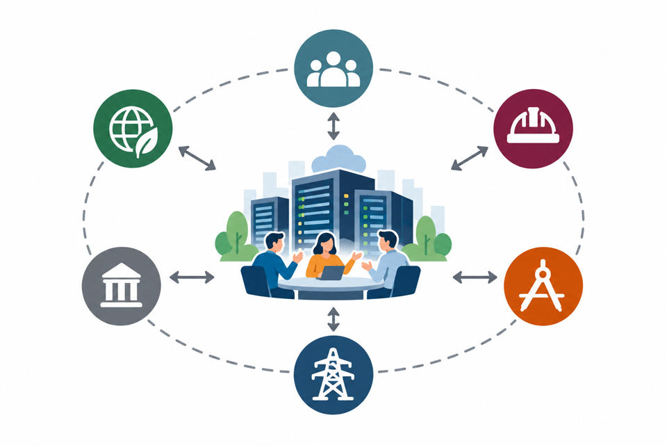
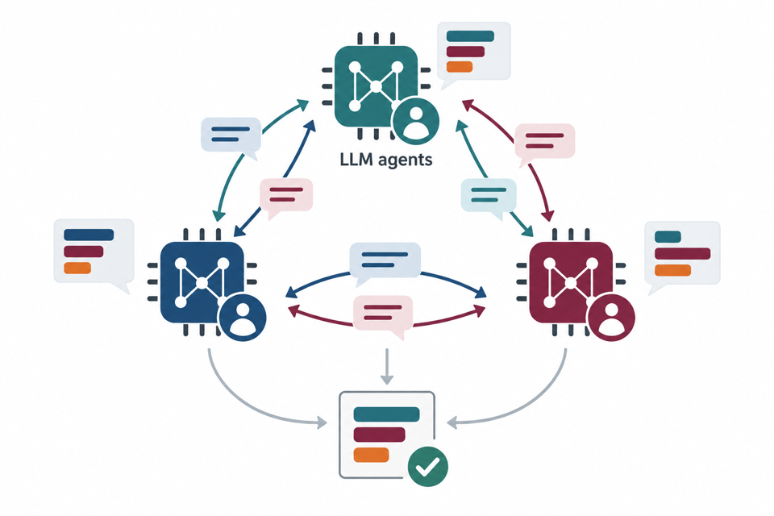

Principal Investigator$10,000
Evaluating Watershed Hydro-Resilience under Rapid Data Center Growth in Virginia through a Geo-Embedded Explainable Machine Learning Framework
VWRRC / USGS · 2027–2028
Co-PIs: Dr. Lu Zhang and Dr. Landon Marston
My research vision is to develop AI-powered, human-centered lifecycle digital twins for resilient infrastructure systems. My current work advances data center planning and design by connecting stakeholder values, AI-assisted negotiation, and human-supervised generative design.

Infrastructure delivery brings together stakeholders from multiple sectors with different values and priorities. I study how these perspectives can inform collaborative planning and decision-making.

Infrastructure planning involves competing priorities and difficult trade-offs. I explore how AI-assisted negotiation can simulate how stakeholders understand one another, reconcile differences, and find common ground.
I combine multi-objective optimization with AI-powered generative design to translate stakeholder priorities into feasible, constructible BIM designs for data centers under regulatory, resource, and engineering constraints. A human-in-the-loop digital twin enables stakeholders to review alternatives, assess trade-offs, and guide design refinement.
VWRRC / USGS · 2027–2028
Co-PIs: Dr. Lu Zhang and Dr. Landon Marston
AI-powered, human-in-the-loop generative design for data centers.
Stakeholder value discovery and multi-agent negotiation.
LLM-based stakeholder classification and value identification.